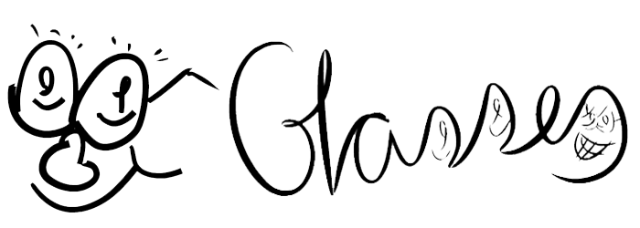

Walking in the darkness
-
"Caminando en la oscuridad"
Inicio
Redes Sociales
Tumblr
Twitter
Contribuye
Desarrolla
Dona
Contacto
Email
Tarjeta de contacto
Foro
Wiki
GitHub
Podeis seguirnos en Twitter o leer nuestro Tumblr ("Blog")
Ir a Tumblr
Ir a Twitter